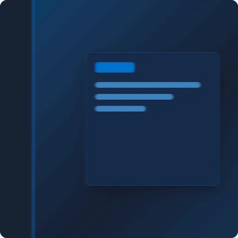
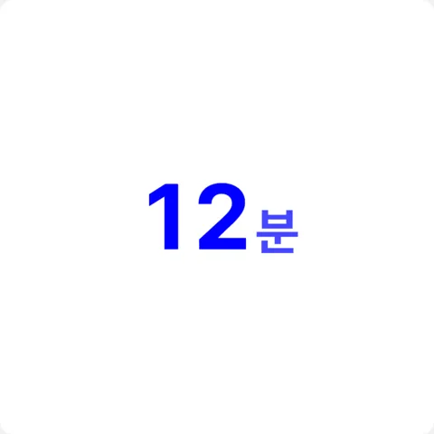
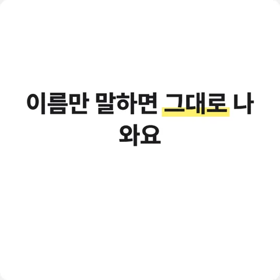
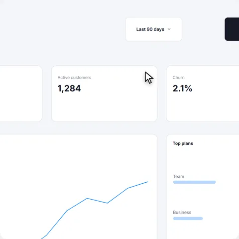
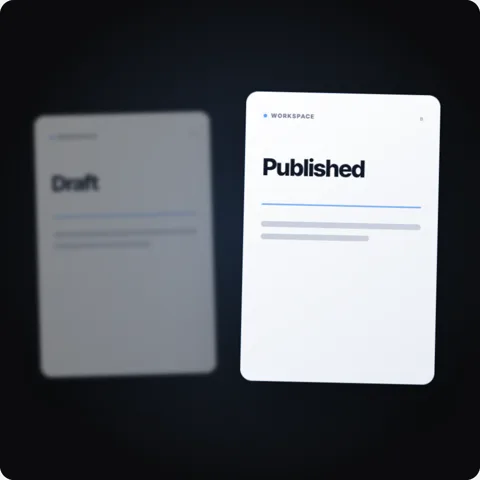
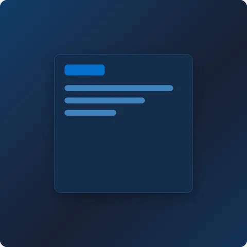

1휩 팬
휩 팬 whip-pan-cut
장면을 넘길 때 · 이렇게 보여요 ↓

npx hyperframes add whip-pan-cut --no-clipboard 로 넣고, 2번 장면에서 3번 장면으로 넘어갈 때 휩 팬(whip-pan-cut)으로 휙 넘겨 줘.
부품 길이가 1.2초예요. 장면이 길면 끝쪽에 붙여 달라고 하세요.

이름만 말하면 그대로 나와요.
효과마다 붙여 넣는 한 줄이에요.
빈 폴더에서 HyperFrames 0.8.206 효과 10개를 세로로 뽑아 보고, 바로 된 7개만 넣었어요 (윈도우 11, 2026-11-12).
whip-pan-cut장면을 넘길 때 · 이렇게 보여요 ↓

부품 길이가 1.2초예요. 장면이 길면 끝쪽에 붙여 달라고 하세요.
count-up숫자를 강조할 때 · 이렇게 보여요 ↓

색을 바꿀 때 accent 에 blue 를 넣으면 진한 원색 파랑이 나와요. accent 는 green 으로 두고 --brand 에 내 색을 넣으세요.
headline-slam첫 장면 훅 · 이렇게 보여요 ↓
글자가 흐리면 --fg 를 진한 색으로 지정해 달라고 하세요(기본이 흰색이에요).
inline-highlight핵심 한 낱말 · 이렇게 보여요 ↓

한 장면에 한 낱말만 칠해야 눈에 들어와요.
cursor-zoom-follow화면을 설명할 때 · 이렇게 보여요 ↓

기본 화면은 영어 대시보드예요. 내 화면 캡처로 바꿔 달라고 하세요.
focus-rack둘을 비교할 때 · 이렇게 보여요 ↓

기본 카드 글자는 Draft·Published 예요. 바꿀 낱말을 같이 말하세요.
iris-reveal결과를 공개할 때 · 이렇게 보여요 ↓

before 칸에 지금 화면, after 칸에 완성 화면을 넣는다고 말하면 돼요.
클로드 영상 스타터팩의 1번(도구 깔기)은 먼저 해 두세요. 프로젝트 폴더가 있어야 효과를 넣을 수 있어요.
accent 에 blue 를 넣으면 HyperFrames 가 --accent 를 「blue」 글자로 덮어써요. accent 는 green 으로 두고 --brand 에 내 색(예: #0078D7)을 넣으세요.
부품 기본 화면이 영어예요. 「카드 글자를 한국어로」 「내 화면 캡처로」처럼 바꿀 것을 같이 말하세요.
caption-highlight · caption-kinetic-slam · camera-shake 는 가로(1920×1080) 전용이라 세로에서 깨졌어요. 그래서 이 키트에서 뺐어요.
npx hyperframes catalog 로 448개를 볼 수 있어요. 세로에서 되는지는 직접 확인해 보세요.
돈 받지 않습니다. 세로에서 되는 효과를 더 찾으면 여기에 더할게요.
@bluescreen.ai 팔로우하면 다음 키트도 받아요 · bluescreen.page